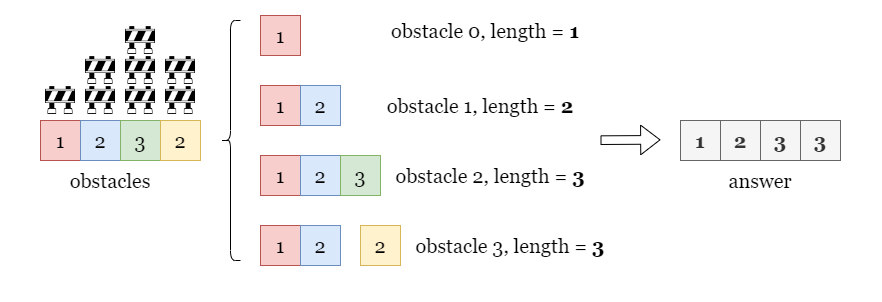
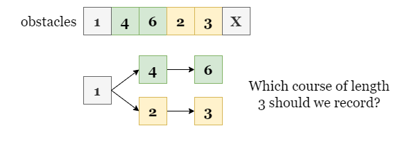
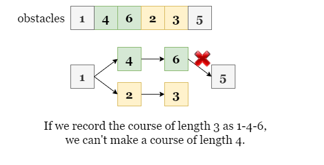
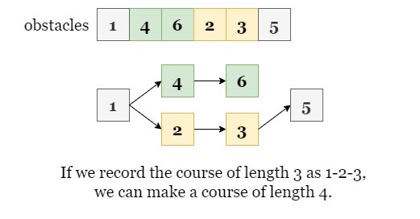
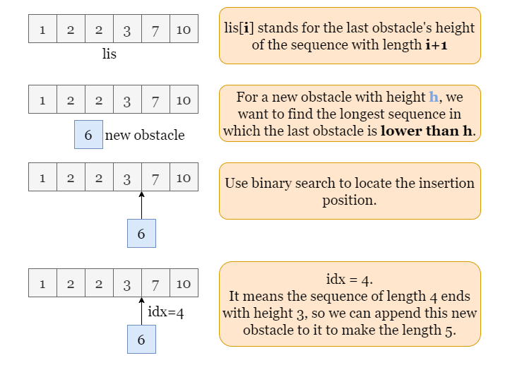
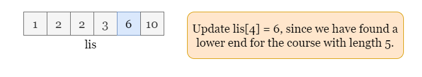

1 / 7
As shown in the picture, we have 4 obstacles.
The longest course ending at obstacles[0] contains 1 obstacle, obstacles[0]
itself.
The longest course ending at obstacles[1] contains 2 obstacles, obstacles[0]
and [1].
The longest course ending at obstacles[2] contains 3 obstacles, obstacles[0],
[1], and [2].
The longest course ending at obstacles[3] contains 3 obstacles, obstacles[0],
[1], and [3]. Note that the course must be non-decreasing so it can't contain
obstacles[2] as it is taller than obstacles[3].

We need to find answer, where answer[i] represents the length of the longest course that
ends with obstacles[i]. In our case, answer = [1, 2, 3, 3].
Given an array of integers, find the longest non-decreasing subsequence. This problem sounds similar to Longest Increase Subsequence (LIS). If you have already solved LIS, this problem will be much easier for you. We will solve this with a greedy approach. The key is:
The longest course for index
iis determined by two factors:
obstacles[i], which is required.- the longest course before index
iwhose last obstacle is shorter than or equal toobstacles[i].By combining the two terms above, we can determine the longest course for index
i.
In short, the longest course ending at index i depends on the courses ending before index i.
Now we have found the relationship between the current problem to a smaller subproblem. It seems that we need to
store all the previous obstacle courses we have met before index i. Then for the obstacle at index
i, we can choose any course that had a final obstacle less than or equal to obstacles[i]
and simply append obstacles[i] to create a new obstacle course with a longer length. We should greedily
choose the longest one out of them to make the longest course for i.
The problem is that there might be many sequences with the same length and it's impractical to store all of them.
Which one should we record? Let's use the following example to illustrate, for i = 5, we find that
there are two previous courses of length 3 before i, as shown in the picture below.
1 -> 4 -> 6
1 -> 2 -> 3
Which one should be considered for i = 5?

Suppose obstacles[5] = 5, if we only record the course 1 - 4 - 6, we can't append
5 to it to make a longer course because obstacles[5] < 6.

However, if we record and use the course 1 - 2 - 3, we can append 5 to it, making the
longest course of length 4.

Therefore, we should always focus on the courses that have the shortest ends. As you may have noticed, we don't even
need to care about the exact course, but only the height of its last obstacle. Going back to the example above, we
don't need to record the whole course, but only the height of its last obstacle is as 3, so we can make
a longer course based on that with any following obstacle that is taller than or equal to 3.
In summary, we use an array lis to record the height of the shortest ending obstacle for courses of each
length: lis[i] is the height of the shortest ending obstacle for the course of length i +
1.
As shown below, suppose we have built lis (Here, lis[4] = 7 means the lowest end of a
course with length 4 we have met so far is 7).
At the iteration step i, we have to find the longest course end by the current obstacle with h =
obstacles[i] = 6. We want to append it to the longest obstacle course we found previously whose end is
shorter than or equal to 6.
This could be done by using a binary search on lis. We just need to find the rightmost insertion
position (which we call idx) of h = 6 to lis. In this example, our insertion
index is idx = 4, which means that the lowest end of a sequence of length 4 is shorter
than or equal to h = 6. We can safely append 6 to this sequence to make a sequence with
length 5.

The last step is to update lis[4] = 6, which means that the lowest ending obstacle of a sequence with
length 5 is 6. With updates such as these, we ensure that lis is always in
non-decreasing order and contains the lowest heights.

Please refer to the following slides as an example:
lis, an array answer of the same length as
obstacles.
obstacles. At each step i, we find idx, the rightmost
insertion position of obstacles[i] to lis.
idx equals the length of lis, append obstacles[i] to
lis.
lis[idx] = obstacles[i].answer[i] = idx + 1.answer once the iteration ends.
Java
class Solution {
List answer;
// Find the rightmost insertion position. We use a fixed-length array and a changeable right boundary
// to represent an arraylist of dynamic size.
private int bisectRight(int[] A, int target, int right) {
if (right == 0)
return 0;
int left = 0;
while (left < right) {
int mid = left + (right - left) / 2;
if (A[mid] <= target)
left = mid + 1;
else
right = mid;
}
return left;
}
public int[] longestObstacleCourseAtEachPosition(int[] obstacles) {
int n = obstacles.length, lisLength = 0;
// lis[i] records the lowest increasing sequence of length i + 1.
int[] answer = new int[n], lis = new int[n];
for (int i = 0; i < n; ++i) {
int height = obstacles[i];
// Find the rightmost insertion position idx.
int idx = bisectRight(lis, height, lisLength);
if (idx == lisLength)
lisLength++;
lis[idx] = height;
answer[i] = idx + 1;
}
return answer;
}
}
C++
class Solution {
public:
vector longestObstacleCourseAtEachPosition(vector& obstacles) {
int n = obstacles.size();
// lis[i] records the lowest increasing sequence of length i + 1.
vector answer(n, 1), lis;
for (int i = 0; i < n; ++i) {
// Find the rightmost insertion position idx.
int idx = upper_bound(lis.begin(), lis.end(), obstacles[i]) - lis.begin();
if (idx == lis.size())
lis.push_back(obstacles[i]);
else
lis[idx] = obstacles[i];
answer[i] = idx + 1;
}
return answer;
}
};
Python3
def longestObstacleCourseAtEachPosition(self, obstacles: List[int]) -> List[int]:
n = len(obstacles)
answer = [1] * n
# lis[i] records the lowest increasing sequence of length i + 1.
lis = []
for i, height in enumerate(obstacles):
# Find the rightmost insertion position idx.
idx = bisect.bisect_right(lis, height)
if idx == len(lis):
lis.append(height)
else:
lis[idx] = height
answer[i] = idx + 1
return answer
Let nn
be the length of the input array obstacles.
Time complexity: O(n⋅logn)O(n \cdot\log n)
obstacles to find the longest sequence. At each step i in the
iteration, we apply a binary search over lis to find the insertion position of the current
height obstacles[i].
lis after each step. In the second
half of the traverse, there are always more than n/2n / 2
elements in lis, thus all these n/2n / 2 binary
searches take O(logn)O(\log n) time.
In this case, the time complexity is O(n⋅logn)O(n \cdot\log n).
Space complexity: O(n)O(n)
lis to store the height of the ending of each sequence. The maximum
length of the longest obstacle course is nn,
thus the size of lis is nn
in the worst-case scenario.